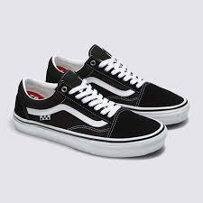
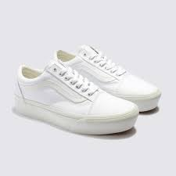

Os irmãos Paul e Jim Van Doren, ao lado dos sócios Gordon Lee e Serge Delia na Califórnia, em 16 de Março. A Van Doren Rubber Company era uma empresa única e pioneira, por fabricar e vender tênis no mesmo lugar, direto ao público
varios modelos para cada estilo
deste o numeros infantis ate os mais velhos
varios estilos em 1 so lugar
femininos ou masculinos